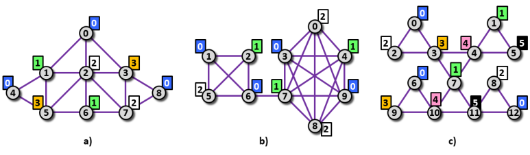

Color Graph III
Let us associate each node of a simple undirected graph with some color.
This allows us to identify various types of edges.
We say that an edge e is of type (c1, c2),
if one of the endnodes of e is associated with color c1 and
another is associated with color c2.
Colors c1 and c2 might or might not be the same.
Let us say that the edge class of type (c1, c2) is the
set of all edges of type (c1, c2) in the graph.
When refering to the type of an edge or an edge class we list the two colors in non-decreasing order.
The distance between two edges u and v in is defined as the minimum length of path
which connects one of end nodes of u to one of end nodes of v. The distance between two
edges which share an end node is 0. Note, that the distance does not depend on the color of nodes or on the edge types.
The diameter of edge class of any type is the maximum distance between any two of its edges. The diameter
of a class containing just one or no edge is defined to be 0.
|
 Image 1. Three graphs corresponding to Example 1, 2, and 3 below. Node color is written in colored box at each particular node. In case a), there are four edge classes with positive diameter. These edge classes are of type (0, 2), (0, 3), (1, 2) and (2, 3). The diameters of these classes are 1, 2, 1, and 1, respectively. In case b), there are again four edge classes with positive diameter. These edge classes are of type (0, 0), (0, 1), (0, 2) and (1, 2). The diameters of these classes are 2, 3, 3, and 3, respectively. In case c), there are six edge classes with positive diameter. These edge classes are of type (0, 2), (0, 3), (1, 4), (1, 5), (3, 4) and (4, 5). The diameters of these classes are 4, 3, 1, 2, 2 and 2, respectively. |
The task
You are given a graph and a color of each its node. Find edge classes of all possible types in the graph and list the types of the classes with positive diameter.
Input
The first input line contains three integers N, E, C
separated by space and representing (in this order) the number of nodes
in the graph, the number of edges in the graph and the number of node
colors in the graph.
We assume that the nodes are labeled 0, 1, ..., N−1.
The next line contains N integers, separated by spaces, which
represent the list of colors of particular nodes. The colors are listed
in ascending order of node labels. The first integer represents the
color of node 0, the second integer represents the color of node 1, etc.
We assume that the colors are labeled 0, 1, ..., C−1.
Next, there are N −1 text lines, each specifies one edge in the
graph. The line contains two integers, separated by space, which
represent the labels of the edge endnodes. The edges are listed in no
particular order. The input graph is connected.
It holds, 4 ≤ N ≤ 1000, 4 ≤ E ≤ 2000, 2 ≤ C ≤ 100.
Output
The output contains more text lines. Each line contains three values a, b, d separated by space which represent one edge class of type (a, b) and diameter d. The lines are printed in lexicographic order of class types, that is, the type (x, y) comes before the type (z, w) if and only if either x < z, or x = z and y < w. There is always at least one edge class with positive diameter in the input data.
Example 1
Input9 16 4 0 1 2 3 0 3 1 2 0 0 1 0 2 0 3 1 2 1 4 1 5 2 3 2 5 2 6 2 7 3 7 3 8 4 5 5 6 6 7 7 8Output
0 2 1 0 3 2 1 2 1 2 3 1The graph in Example 1 is depicted in Image 1 a).
Example 2
Input10 22 3 2 0 1 0 1 2 0 1 2 0 1 2 1 5 1 6 2 5 2 6 5 6 6 7 0 3 0 4 0 7 0 8 0 9 3 4 3 7 3 8 3 9 4 7 4 8 4 9 7 8 7 9 8 9Output
0 0 2 0 1 3 0 2 3 1 2 3The graph in Example 2 is depicted in Image 1 b).
Example 3
Input13 18 6 0 1 2 3 4 5 0 1 2 3 4 5 0 0 2 0 3 1 4 1 5 2 3 3 4 4 5 3 7 4 7 6 9 6 10 7 10 7 11 8 11 8 12 9 10 10 11 11 12Output
0 2 4 0 3 3 1 4 1 1 5 2 3 4 2 4 5 2The graph in Example 3 is depicted in Image 1 c).
Public data
The public data set is intended for easier debugging and approximate
program correctness checking. The public data set is stored also in the
upload system and each time a student submits a solution it is run on
the public dataset and the program output to stdout and stderr is
available to him/her.
Link to public data set